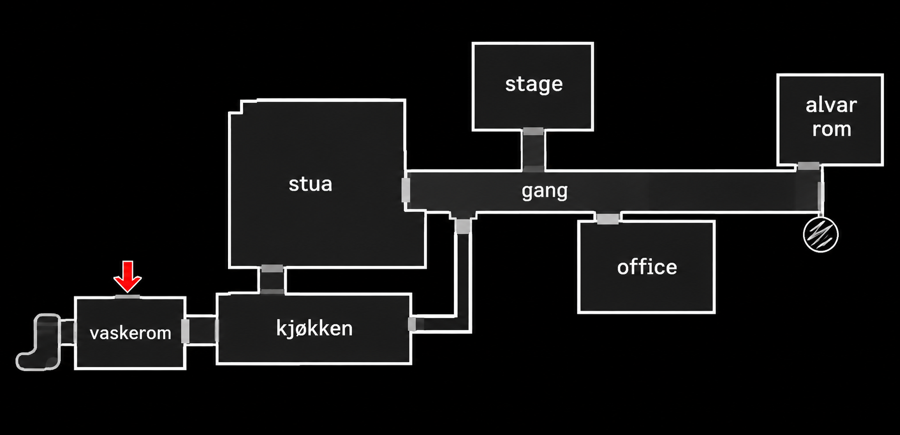

AKSEL'S • NATTOVERVÅKNING SYSTEM KLART
NATT 01VAKT NR. 1987
00:00VAKTEN SLUTTER 06:00
RESERVESTRØM 100%
FORBRUK ▮
● LIVE
Vaskerom
KAMERA 01 / LIVE

DUyou can't
ET UOFFISIELT FANSKREKKSPILL
FIVE NIGHTS
AT AKSEL.
Du er ikke alene på nattevakten.
Hold musikkboksen i Alvar-rommet i gang.
Lytt etter banking. Sjekk gangen med lyset.
Og spar nok strøm til klokken seks.
LASTER BILDER …
Høye lyder og jumpscares. Menylyd starter automatisk, eller ved første klikk hvis nettleseren krever det.
D DørE GanglysSPACE KameraESC Pause
GJENFUNNET OPPTAK
PILTASTER / WASD · ESC PAUSE
06:00
UTENFOR KARTET
WASD / PILTASTER · E FOR Å BRUKE
ARKIVET ER ÅPNET
VAKT AVSLUTTET